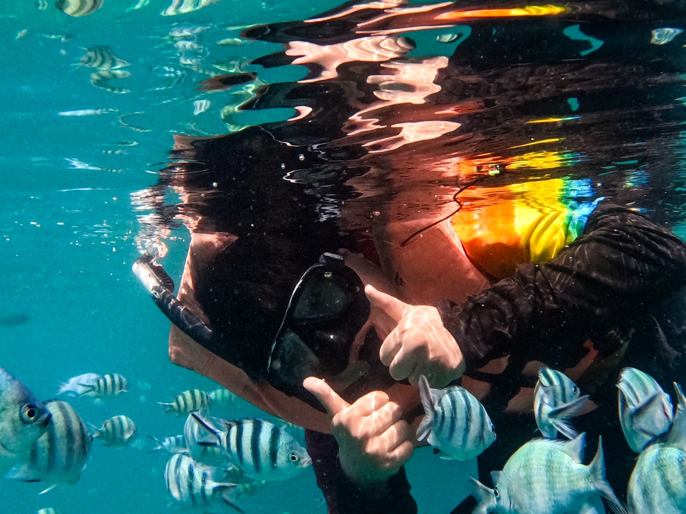

Hyperlore Game Studio
Dec 2024 — Feb 2026Character Rigger / Technical Art Support
Character rigs, facial blendshapes, deformation QA, and Maya workflow tools.3D | Technical Artist & CG ARTIST · BANGKOK, THAILAND
I’m Sirikorn Sangwilai, a 3D / CG artist with 4+ years in game production. My work spans modeling, texturing, look development, lighting and rendering, environment assembly, real-time VFX, and character rigging, supported by hands-on technical art experience.
Explore selected work01 / SELECTED WORK
Explore environment, character, and prop artwork,
from asset creation to final visual presentation.
02 / CG & VISUAL EFFECTS
Visual effects shorts and movement-driven
real-time effects in Unreal Engine.
03 / GAME PRODUCTION & RIGGING
Production work across character rigging, environment assembly, lighting, VFX, and Unreal Engine integration. Each project details my contribution within the wider team.
Character rigging for the characters appearing in the linked official development footage, using Advanced Skeleton as the base rig, with custom extensions for skirts, clothing, hair, and FK/IK workflows.
Footage is linked to the original studio posts. Rigging credit describes my contribution; other production work belongs to the respective team members.
04 / MATERIALS & PRODUCTION TOOLS
Reusable materials and artist-friendly tools
for a more consistent production workflow.
05 / ABOUT ME

I’m a 3D / CG artist with 4+ years of game production experience and a generalist skill set spanning asset creation, look development, lighting and rendering, environment assembly, real-time VFX, and character rigging.
I work across both visual and technical production: building and texturing assets, refining materials and lighting, assembling real-time scenes, and preparing characters for animation and engine integration. At Namson Digital, I also worked with Unreal Engine 5 Lumen, Sequencer, and Movie Render Queue for production lighting and rendering. My technical art experience includes Maya and Unreal workflow tools and collaboration with art, animation, design, and development teams.
Character Rigger / Technical Art Support
Character rigs, facial blendshapes, deformation QA, and Maya workflow tools.3D Artist / Technical Art Support
3D asset creation, environment assembly, materials, VFX, character rigging, and Unreal Engine integration. Production lighting with Lumen and rendering with Sequencer / Movie Render Queue, alongside level-design contributions and developer support.3D Modeler Intern
Modeling, UVs, topology, and production asset preparation.B.Sc. Computer Animation and Game · Mahasarakham University · 2021
LET’S CREATE SOMETHING
For CG Artist, 3D Generalist, and Technical Artist opportunities.